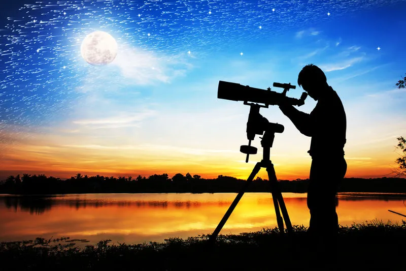

Óptica é a parte da Física que estuda fenômenos associados à luz. Divide-se em óptica geométrica e óptica física, de acordo com a forma que a luz se comporta.

Óptica é a parte da Física responsável pelo
estudo dos fenômenos associados à luz. Os
fenômenos relacionados à Óptica são conhecidos desde a Antiguidade. Existem registros de
que, em 2.283 a.C., já eram utilizados cristais de rocha para observar as estrelas. Na Idade
Antiga, na Assíria, já havia a lente de cristal; e, na Grécia, utilizava-se a lente de vidro
para obter fogo.
O grande salto no estudo da Óptica ocorreu no século XVI. Galileu Galilei
apresentou o
primeiro telescópio, em 1609, e Snell Descartes chegou à Lei da refração. O
trabalho mais
importante dessa época foi a medição da velocidade da luz. O valor
encontrado foi c = 3,08.
1010 cm/s, obtido por Bradley, em 1728.
Outro importante nome para a evolução dos estudos sobre a Óptica foi o de Huygens, que, em
1678, apresentou a hipótese de que a luz seria uma onda. Isaac Newton
também deixou suas
contribuições na área, como a teoria da variação do índice de refração da luz pela variação
da cor, que pode ser observada na dispersão da luz ao passar por um prisma.
O fato de se considerar apenas a natureza corpuscular da luz representou um atraso nos
estudos da Óptica. Somente em 1801 que Young realizou a experiência da interferência
da luz,
explicando-a a partir da teoria ondulatória. Em seguida, por volta de 1815, Fresnell
explicou a teoria da difração da luz também por meio da teoria ondulatória.
Outro cientista importante para o desenvolvimento dessa teoria foi Foucault, que descobriu
que a velocidade da luz era maior no ar do que na água. Essa descoberta chocava-se com a
teoria corpuscular, que afirmava que a velocidade da luz era maior na água que no ar. Foi de
James Clerk Maxwell a principal evidência de que a luz comportava-se como
uma onda
eletromagnética, pois ele provou que a velocidade de propagação de uma onda eletromagnética
no espaço era igual à velocidade de propagação da luz.
A teoria de que a luz comportava-se apenas como uma onda eletromagnética foi questionada no
final do século XIX. Isso porque não era suficiente para explicar o efeito
fotoelétrico.
Einstein utilizou a teoria de Planck para mostrar que a luz era formada por “pequenos
pacotes de energia”, os fótons. A partir dessa teoria, Arthur Compton
demonstrou que, quando
um fóton e um elétron colidem, ambos se comportam como matéria. A partir de então, a
luz
passou a ser considerada como onda e como partícula, dependendo do fenômeno
estudado. Essa
teoria é denominada de natureza dual da luz.
Parte da Óptica que estuda a propagação da luz por meio dos raios de luz. Os fenômenos que essa área abrange são: propagação retilínea da luz, reflexão e refração da luz, espelhos e lentes;
Estuda o comportamento ondulatório da luz. Os fenômenos estudados por
essa área são: emissão, composição, absorção, polarização, interferência e difração da luz.
- A Óptica é uma parte da Física que está muito presente no nosso dia a dia. Algumas de suas
aplicações podem ser observadas, por exemplo:
- Em instrumentos utilizados para corrigir defeitos visuais, como os óculos e as lentes;
- Instrumentos para observação, como os microscópios, telescópios e lunetas;
- Em câmeras fotográficas, filmadoras etc.;
- Espelhos.